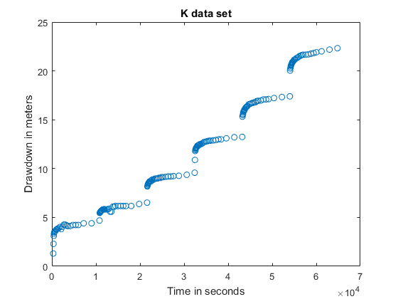
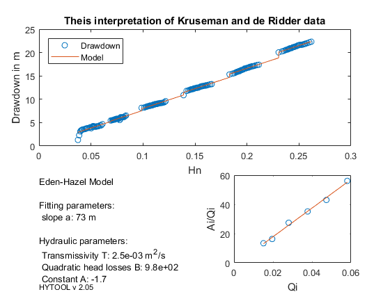

Eden Hazel interpretation.
This is a demonstration of the interpretation of Step-drawdown test with Eden and Hazel (1973) method
Copyright 1998-2007 - Philippe Renard & Co. - GNU GENERAL PUBLIC LICENSE
Contents
Load the data
The data set for this example where taken from: Kruseman and de Ridder (1994) Analysis and evaluation of pumping test data, ILRI Publication No. 47, Table 14.1 page 204.
The original source of the data is: Clark, L. (1977) The analysis and planning of step-drawdown tests. Quarterly Journal of Engineering Geology and Hydrogeology 10(2):125-143
Let us load the data in the matlab workspace with the ldf function. We then plot the data to verify them graphicaly.
[t,s]=ldf('eha_ds1.dat'); clf plot(t,s,'o') xlabel('Time in seconds') ylabel('Drawdown in meters') title('K data set')
Hytool then needs to know the duration of the pumping steps and the values of the pumping rates for each pumping step. This information is described and stored in a matrix made of two columns and as many raws as pumping steps. The first columns contains the time at which the pumping stoped, the second the values of the pumping rates.
We need now to build this matrix and provide it to hytool.
qp=[1306 1693 2423 3261 4094 5019]/86400; % Vector of pumping rates in m3/s tp=[10800 21600 32400 43200 54000 64800]; % Final time of each steps in s q=[tp',qp']; % Build the required matrix eha_pre(t,q); % Initialize the eha model
Model parameter identification and report
We now fit the model and report the results as usual with hytool.
p0=eha_gss(t,s); p=fit('eha',p0,t,s); eha_rpt(p,t,s,'Theis interpretation of Kruseman and de Ridder data');
Norm of Norm of
Iteration SSE Gradient Step
-----------------------------------------------------------
0 6.91711
1 5.43068 0.124306 0.333366
2 5.41415 0.0196484 0.878373
3 5.40762 0.00203492 0.908763
4 5.40755 2.32278e-05 0.103732
5 5.40755 2.67891e-08 0.00119634
Iterations terminated: relative change in SSE less than OPTIONS.TolFun
 The estimated transmissivity is T = 2.5e-3 m2/s and the quadratic head losses coefficient is B = 980 s2/m5. These numbers compare well with the values estimated by Kruseman and de Ridder (1994):
T=3.1e-3 m2/d B=1.4e-7 d2/m5 = 1045 s2/m5